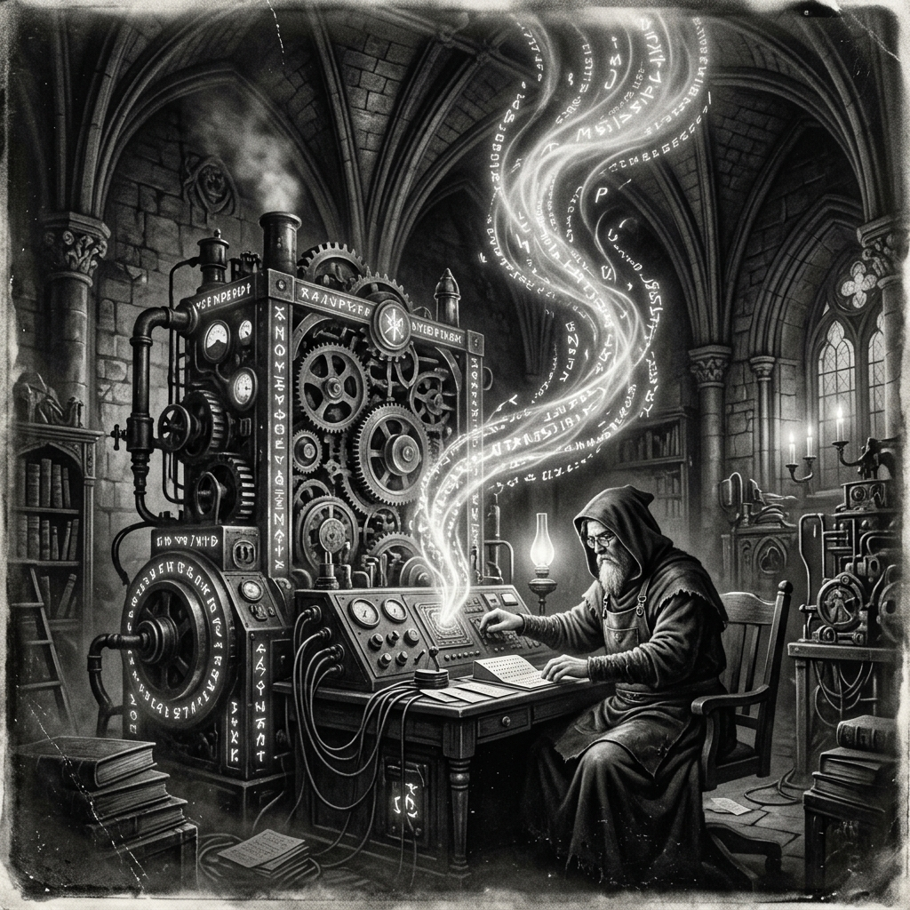

Morning Edition
6:00 AM CSTFinance & Markets
2026's Biggest Crypto Exploit: $292M Drained from Kelp DAO
An attacker drained 116,500 rsETH—roughly 18% of circulating supply—from Kelp's LayerZero-powered bridge on Saturday, triggering emergency freezes across Aave, SparkLend, Fluid and Upshift. The wrapped ether was stranded across 20 chains in what's now the year's largest exploit.
— Source: CoinDesk, April 19, 2026AI Devours 80% of Global Venture Funding in Early 2026
AI companies raised $242 billion in early 2026, capturing 80% of all global venture funding. Gartner projects total AI spending will hit $2.52 trillion this year. Crypto firms are adapting by pivoting toward AI-crypto convergence narratives.
— Source: CoinDesk, April 18, 2026Alcoa to Sell Dormant Smelter to NYDIG for Bitcoin Mining
Alcoa is in advanced talks to sell its dormant Massena East smelter in upstate New York to Bitcoin mining firm NYDIG, converting old aluminum infrastructure into digital asset energy infrastructure.
— Source: CoinDesk, April 18, 2026World & US
Iran-US Nuclear Talks Make Progress But Remain "Far" From Deal
Iranian officials report progress in talks to end tensions, but significant gaps remain. President Trump called the conversations "very good" but said the US won't be "blackmailed" over the Strait of Hormuz.
— Source: BBC News, April 19, 2026Zelensky Condemns US Extension of Russian Sanctions Waiver
Ukraine's president sharply criticized the US decision to extend a sanctions waiver on Russian energy transactions, arguing it undermines Western pressure on Moscow.
— Source: BBC News, April 19, 2026
The Sunday Seer: A Cathedral of Code, Where Runes Compile Themselves.
"Sagittarius, Sunday asks you to slow down just enough to see the pattern. The code you've been writing all week has a shape to it—step back and let it speak. As a Rat-born Archer, your instinct is to ship fast, but today the universe rewards reflection over velocity. Fix that one bug that's been nagging you. Refactor the thing you've been avoiding. The cleanest commits come from the quietest Sundays."— Sunday's Developer Chronicle
Sagittarius Horoscope
Sunday brings a mellow energy, Archer. You may be having problems with lighting or heating in your environment—check your literal and metaphorical circuits. A practical fix today prevents a bigger headache tomorrow. This is a wonderful day for low-key creative work: sketch out ideas, organize your notes, plan the week ahead. Friends who reach out today bring unexpected insights. Your Rat-born adaptability means you'll find elegance in the mundane. Lucky numbers: 7, 16, 25. Lucky color: Dawn Gold. ✨
— Source: Horoscope.com, April 19, 2026Tech & AI Highlights
-
NIST Scientists Create "Any Wavelength" Lasers
Researchers at NIST have developed lasers that can emit any color wavelength using tiny photonic circuits—a breakthrough for computing, sensing, and telecommunications.
— Source: NIST / Hacker News, April 19, 2026 -
Robots vs Humans in Beijing Half Marathon
Humanoid robots competed alongside runners in a Beijing half marathon. The winning machine left its human rivals behind, showcasing dramatic advances in bipedal locomotion.
— Source: BBC News, April 19, 2026 -
Ethereum's Joseph Lubin Warns of Big Tech AI Monopoly
The Ethereum co-founder cautioned against AI concentration in a few big tech firms, while discussing Ethereum's evolution through MetaMask, stablecoins, and tokenization. He downplayed near-term quantum computing threats.
— Source: CoinDesk, April 18, 2026
Markets Snapshot (Friday Close)
- Dow Jones: 49,447 (+1.79%)
- S&P 500: 7,126 (+1.20%)
- Nasdaq: 24,468 (+1.52%)
- Russell 2000: 2,777 (+2.11%)
- Bitcoin: ~$78,000 (above 100-day MA)
- rsETH: Exploited—18% supply drained
Active Reminders
- Build Oomi iOS and Android app
- Plaid Integration Research
- Connect Nemu to Notion
- Research VPN/proxy services
- Create security OpenClaw bot